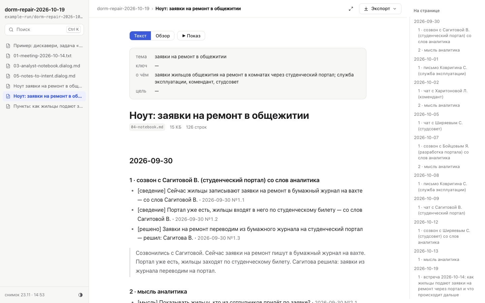
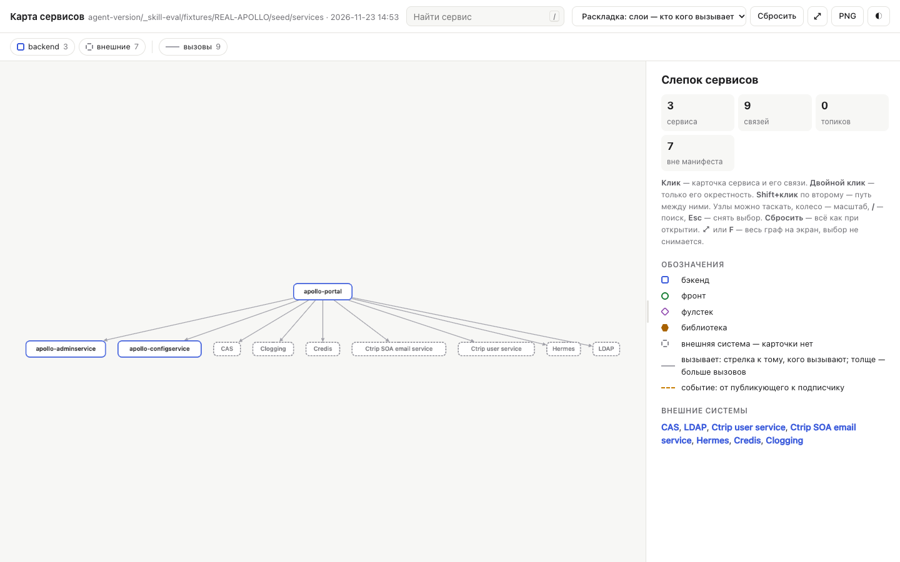

Плагины не входят в основной процесс и зовутся в любой момент. Документы задачи ни один из них не правит.
Примеры у скиллов — эмуляция на задаче DORM-101 «Заявки на ремонт в общежитии». Настоящий выход прогонов — на странице «Пример». DORM-101 — эпик из двух частей; спека и этапы показаны для части DORM-104. У обычной задачи всё лежит в coddoc/<КЛЮЧ>/.
Все плагины
Каждый плагин вызывают отдельно: командой или репликой. Свои файлы большинство из них пишет в папку .coddoc-tmp/ в корне репозитория.
to-html
1.7.0
Показывает markdown в браузере: файл, несколько файлов, папку или пустую страницу для перетаскивания. У БТ, баг-репорта, запроса на правку и спеки есть режимы «Обзор» и «Показ», у остальных .md «Обзор» по разделам.
Когда звать
«открой md в браузере», «в html», «to-browser», «покажи нормально, а не текстом».
Как зовут
/to-html <путь к .md или папке>; можно несколько путей, без пути откроется пустая страница.
Вход → выход
Пути к .md или папкам. Скрипт собирает страницу .coddoc-tmp/to-html/<набор>/index.html и открывает её. На странице дерево файлов, оглавление, поиск, схемы Mermaid, экспорт в html, копирование в Confluence или Word. Форма «Обзора» («Редактировать форму») сохраняется в .coddoc-tmp/coddoc-settings/layouts/.
Кто вызывает
Вы вручную.
Что нужно
bash (macOS, Linux) или PowerShell (Windows) и браузер. Если запуск скриптов запрещён, откройте reference/viewer/index.html в папке скилла двойным щелчком и перетащите файлы в окно.
Не делает
Сам файлы не читает и html не собирает, всё делает скрипт. В папке больше 2000 файлов: просит назвать папку поуже.

Папка примера про общежитие в to-html: дерево файлов, ноут, оглавление.
Форма ответа в чат (шаблон скилла)
Открыл в браузере: <что открыл>. После правок — снова /to-html, потом F5 во вкладке.
Если вкладка не появилась — открой: <адрес из `page=` как есть>
agent-version/to-html/SKILL.md, строки 57–58 (ответ, когда страница открылась)
Карта сервисов в браузере по карточкамservices/: сервисы разложены слоями «кто кого вызывает», есть фильтры, путь между двумя сервисами и карточка рядом.
Когда звать
«карта сервисов», «граф сервисов», «покажи сервисы», «кто кого вызывает», «связи <сервиса> на карте», «повертеть сервисы».
Как зовут
/services-graph [сервис] [папка слепка] или «покажи на карте связи payments», «карта вокруг auth».
Вход → выход
Скрипт берёт из слепка карточки *.md, manifest.yaml и _history/, собирает страницу .coddoc-tmp/services-graph/index.html и открывает её. Без папки слепка берёт services/ в корне репозитория.
Кто вызывает
Вы вручную.
Что нужно
bash (macOS, Linux) или PowerShell (Windows), браузер и собранный слепок (/service-map).
Не делает
Карточки не собирает, это service-map; схем не рисует, это interaction-diagram.

Карточки сервисов Apollo в services-graph: кто кого вызывает, внешние системы, сводка слепка.
Форма ответа в чат (шаблон скилла)
Открыл карту сервисов: карточек <cards>. Клик по сервису — его связи и карточка, двойной
клик — только его окрестность, Shift+клик по второму — путь между ними. Карточку удобнее читать широко: кнопка
«Развернуть» в панели или потянуть её за край. После нового скана — снова /services-graph,
потом F5 во вкладке. Если вкладка не появилась — открой: <адрес из `page=` как есть>
agent-version/services-graph/SKILL.md, строки 47–50 (ответ, когда карта открылась)
Показывает документы задачи из любой ветки, не переключая вашу: по ключу свежую папку задачи из всех веток, по словам поиск в coddoc/ всех веток, с --list документы в работе с открытыми вопросами.
Когда звать
«что у коллеги по задаче», «в какой ветке БТ по …», «найди во всех ветках …», «что у меня в работе».
Как зовут
/peek <ключ задачи или слова>; /peek --list [--base <ветка>].
Вход → выход
Читает локальные ветки и origin, перед поиском делает fetch origin. Копии документов пишет в .coddoc-tmp/peek/<КЛЮЧ>/ и .coddoc-tmp/peek/list/. В ответе подсказка: /to-html <путь>, чтобы открыть выгрузку в браузере.
Вашу ветку и рабочую копию не трогает: никаких checkout, stash, pull, worktree. Копии в .coddoc-tmp/peek/ править бесполезно: следующий вызов их перезапишет.
эмуляция · DORM-101
Вызов
/peek завести за жильца
Результат
ответ в чат
«завести за жильца» — строк: 6 (веток: 3)
слова — из вызова; ищет строки со всеми словами во всех ветках
DORM-101 · feat/DORM-101 · zotova · coddoc/DORM-101/business_requirements.md:14 · > 4. Бизнес-процесс: что верно — жилец подаёт заявку сам, вахта заявки не принимает (Харитонова Л.), или вахтёр может завести заявку на портале за жильца (Сагитова) — ждёт: —
БТ DORM-101, открытый вопрос 4
DORM-104 · feat/DORM-101 · zotova · coddoc/DORM-101/DORM-104/business_requirements.md:21 · > 4. Бизнес-процесс: что верно — жилец подаёт заявку сам, вахта заявки не принимает (Харитонова Л.), или вахтёр может завести заявку на портале за жильца (Сагитова) — ждёт: —
детский БТ DORM-104 — вопрос унаследован из эпика
DORM-104 · feat/DORM-101 · zotova · coddoc/DORM-101/DORM-104/technical_specification.md:20 · > 1. INT-1, авторизация: есть ли у вахтёра вход на портал, чтобы завести заявку за жильца — 🟡
спека DORM-104, 🟡 в шапке
DORM-104 · feat/DORM-101 · zotova · coddoc/DORM-101/DORM-104/technical_specification.md:214 · - бизнес-процесс: что верно — жилец подаёт заявку сам, вахта заявки не принимает (Харитонова Л.), или вахтёр может завести заявку на портале за жильца (Сагитова) — ждёт: —
спека DORM-104, §8 — унаследовано из БТ
— · main · zotova · coddoc/_inbox/meeting-2026-10-14.points.md:8 · - [решено] Вахтёр может завести заявку на портале за жильца — решил: Сагитова · L65
список пунктов встречи 2026-10-14
— · main · zotova · coddoc/_inbox/notebook-2026-10-19-bt.md:27 · - Что верно: жилец подаёт заявку сам, вахта заявки не принимает (Харитонова Л.) или вахтёр может завести заявку на портале за жильца (Сагитова) — ждёт: —
Ведёт план работы аналитика по инициативе: дела из открытых вопросов документов в невлитых ветках и в рабочей копии, сгруппированные по тому, кого ждём. Повторный запуск показывает, что закрылось и что появилось.
Когда звать
Нужен план по инициативе: какие документы в работе и какие дела по их открытым вопросам.
Как зовут
/work-plan <инициатива>; /work-plan <инициатива> добавь добавляет документы, которых нет в плане; /work-plan следи обновляет план сам по расписанию; /work-plan стоп снимает слежку.
Вход → выход
Берёт список документов в работе от скрипта peek и их копии. Пишет .coddoc-tmp/work-plan/<имя>.md. Как часто следить, читает из .coddoc-tmp/coddoc-settings/work-plan.md; файла нет, значит, каждые 10 минут.
Кто вызывает
Только вы, командой.
Что нужно
Python 3; скилл peek 1.2.0 или новее рядом; git. Слежка работает, пока открыта сессия.
Не делает
Документы и ноуты не правит, ветку не переключает. Вопросы не закрывает, дела не ранжирует и своих не добавляет.
Форма файла плана (шаблон скилла)
# План: <имя>
обновлён: <ГГГГ-ММ-ДД>
главная: <ветка>
цель: <цель>
## Документы
- <путь> · <ветка | рабочая копия> · <дата> · открытых: N
## Дела
Всего N: <группа> — K · <группа> — K · …
### <группа> — K
1. <суть> · <откуда>
> <оригинал>
## Закрыто
- ~~<суть> · <откуда>~~ · закрыто <ГГГГ-ММ-ДД>
> <оригинал>
Отвечает, как система работает сейчас и откуда это взялось, по коду соседних сервисов и истории git. У каждого утверждения ссылка файл:строка: ищет отдельный агент, а скилл открывает и сверяет каждую его ссылку.
Когда звать
«как сейчас работает…», «где в коде считается…», «посмотри в коде», «глубокий поиск», «почему так сделано», «откуда это взялось», «так задумано?».
Как зовут
/deep-search <вопрос> или реплика «как сейчас работает …».
Вход → выход
Читает вопрос, services/*.md и services/manifest.yaml (там сказано, где лежит код), код соседних репозиториев, context/, историю git. Ничего не пишет: ответ только в чат.
Кто вызывает
Вы вручную. Ещё technical-spec-doc, если вы выбрали вариант «Глубокий поиск — посмотреть в коде <сервис>»; в режиме починки по баг-репорту такого варианта нет.
Что нужно
Папка services/ в репозитории и код сервисов рядом, как в манифесте; git для вопроса «откуда взялось». Скилл читает локальную копию, она могла отстать от удалённой.
Не делает
Как сделать, не советует: «Это вопрос проектирования — его решают в спеке, /analyst-workspace. Могу рассказать, как это работает сейчас». Ссылку, которая не подтвердилась, убирает.
эмуляция · DORM-102
Вызов
как сейчас работает уведомление жильцу при смене статуса заявки?
Диалог
Скилл Как сейчас: notify принимает уведомление и шлёт жильцу пуш и письмо на студенческую почту; кто вызывает его при смене статуса заявки, в репах из манифеста не нашёл. Читал: notify, ветка main — локальная копия, могла отстать от удалённой. Рядом вне манифеста: repair-requests — если ответа не хватает, скажи «посмотри в repair-requests».
Аналитик посмотри в repair-requests
Результат
ответ в чат
Как сейчас: уведомление жильцу уходит только при подаче заявки; при смене статуса на «в работе» и «выполнена» repair-requests в notify не обращается.
из кода repair-requests — по просьбе «посмотри в repair-requests»
- [в коде] при подаче заявки вызывает notify с текстом «Заявка принята» — repair-requests/src/main/java/ru/dorm/repair/RequestService.java:64
ссылку скилл открыл и сверил
- [в коде] смена статуса сохраняет новый статус и возвращает ответ, вызова notify в ней нет — repair-requests/src/main/java/ru/dorm/repair/RequestService.java:112-121
ссылку скилл открыл и сверил
- [из документа] notify отправляет жильцу пуш и письмо на студенческую почту — services/notify.md
из карточки notify
Читал: repair-requests, ветка main — локальная копия, могла отстать от удалённой.
Рисует схему в Mermaid или PlantUML по документу или тексту. По карточкам взаимодействий спеки рисует короткую схему (кто кого вызывает по времени) или сценарную (по диаграмме на действие пользователя), по разделу 4.1 БТ путь пользователя, по списку пунктов или любому тексту короткую схему или путь пользователя.
Когда звать
Нужна картинка: кто кого вызывает или как идёт процесс.
Как зовут
/interaction-diagram <путь> или текст прямо в чате.
Вход → выход
Читает technical_specification.md, business_requirements.md, *.points.md или любой другой текст. Пишет один файл рядом с источником: короткая схема в interaction_diagram.md, сценарная в interaction_scenarios.md, путь пользователя в user_flow.md; в PlantUML то же с расширением .puml. Mermaid виден в GitHub, GitLab и JetBrains без установки, в VS Code с расширением.
Не проектирует: на схеме только то, что есть в источнике или в ваших ответах. Источник не правит, services/ и context/ не читает. По ноуту напрямую не рисует: сначала /analyst-notebook <тема> собери пункты.
Скилл Какую схему рисовать: короткую — кто кого вызывает, по времени, — или сценарную — по диаграмме на действие пользователя, с ответами и телами запросов? В каком формате нарисовать: Mermaid или PlantUML?
Аналитик Короткую, Mermaid.
Скилл INT-1 «Подать заявку»: student-portal → repair-requests; INT-2 «Корпус и комната жильца»: repair-requests → student-portal; INT-3 «Сменить вид или статус заявки»: student-portal → repair-requests; INT-4 «Заявки жильца»: student-portal → repair-requests; INT-5 «Уведомление о смене статуса»: repair-requests → notify. Участников 3: student-portal, repair-requests, notify. Считаю всех разными. Есть ли среди них один сервис под двумя именами? По времени карточки идут в том же порядке, что в списке?
Аналитик Все разные. По времени: INT-1, INT-2, INT-4, INT-3, INT-5.
Результат
coddoc/DORM-101/DORM-104/interaction_diagram.md
# Схема взаимодействий — DORM-104
ключ — имя папки спеки из вызова
…
```mermaid
sequenceDiagram
из ответа аналитика: «Короткую, Mermaid»
participant S1 as student-portal
participant S2 as repair-requests
participant S3 as notify
из «Граница/направление» карточек спеки; «Все разные» — ответ аналитика
S1->>S2: INT-1 · POST /api/v1/repair-requests
S2->>S1: INT-2 · GET /api/v1/students/{studentId}/residence
порядок — из ответа аналитика; подписи — метод и путь из карточек
S1->>S2: INT-4 · GET /api/v1/repair-requests/my
S1->>S2: INT-3 · PATCH /api/v1/repair-requests/{id}
S2->>S3: INT-5 · POST /api/v1/notifications
```
порядок — из ответа «По времени: INT-1, INT-2, INT-4, INT-3, INT-5»
Объясняет ещё раз простым русским последний ответ агента или названный пункт, термин, вставленный текст. Смысл тот же, язык проще.
Когда звать
«объясни проще», «объясни ещё раз», «не понял», «переведи на человеческий».
Как зовут
«объясни проще» или /say-simple [пункт, термин или вставленный текст].
Вход → выход
Последний ответ или то, что назвали. Значения слов берёт из разговора или из папки context/. Ничего не пишет.
Кто вызывает
Вы вручную.
Не делает
Ничего не теряет: числа, имена, команды и пути остаются слово в слово. Ничего не добавляет: ни фактов, ни выводов, ни советов. Кроме context/, файлов не открывает.
эмуляция · DORM-101
Вызов
объясни проще
Результат
ответ в чат — вопрос «БТ принят — идём дальше?» из примера spec-review, простыми словами
Проверка БТ закончена. Всё нужное для следующих шагов уже лежит в файлах, поэтому здесь можно очистить разговор командой /clear.
из строки «документ принят… здесь можно /clear»
Проверка нашла одно нарушение: в §4.2, строка 70, сказано «пять дней», и непонятно, каких — календарных (с выходными) или рабочих.
из «Нарушение: §4.2, строка 70…»
Ещё в БТ 5 открытых вопросов, на них пока нет ответа: комендант, исполнитель, заявка на секцию, вахтёр, оплата ремонта.
из «Открытых вопросов: 5 — …»
Идём дальше? Можно выбрать одно из трёх:
1. Поправить документ сейчас — 1 нарушение, 5 открытых вопросов. Вернёмся к вопросам по БТ: сейчас это дешевле, чем потом, когда задачу разрежут на части.
из варианта 1
2. Идти дальше — резать на «подача заявки и статусы», «подтверждение выполнения и комментарий». Агент запустит task-decomposition-doc: он разложит эпик на детские БТ, по одному на часть. Открытые вопросы перейдут в детские БТ и в §8 спеки, но статус спеки не заблокируют. Нарушение останется в документе.
из варианта 2
3. Пока остановиться. Документ уже лежит на диске; вернуться к нему можно через «Продолжить начатое».
Ретро для вас самих: разбирает до десяти последних ваших сессий с агентом в этом проекте и показывает, что получается, что мешает, как исправить, и одно главное «попробовать». Без баллов.
Когда звать
Когда хотите разобрать свои последние сессии.
Как зовут
/retro; если журналы не нашлись, /retro <папка с журналами чата>.
Вход → выход
Журналы чата этого проекта (.gigacode/projects в домашней папке или папка chats). Рабочие файлы кладёт в .coddoc-tmp/retro/ и в конце убирает. Отчёт только в чат.
Кто вызывает
Только вы, командой.
Что нужно
Python 3 (python3, на Windows python).
Не делает
Не оценивает: без баллов, процентов и сравнения с другими. В отчёт идут только моменты с дословной цитатой из журнала, которую сверил скрипт.
эмуляция · DORM-101
Вызов
/retro
Результат
ответ в чат
Разобрано 6 сессий за 19.10–23.10. Это для вас: не оценка, никуда не отправляется.
из журналов чата этого проекта
Что получается
- На неизвестное отвечаете «не знаю», а не догадкой — в 4 из 6 сессий. «Пока не знаю — спор не решён, оставьте открытым» (21.10, ход 6).
цитата сверена скриптом — это ответ из примера БТ
Что мешает
> **Прерванную работу продолжаете пересказом — в 2 из 6 сессий.**
> «вчера остановились на спеке DORM-104, продолжаем с INT-3» (23.10, ход 1) — агент начал интервью по спеке заново.
из журнала сессии 23.10, ход 1
> Почему важно: состояние работы лежит на диске, пересказ отстаёт от файла.
> Что сделать: `/analyst-workspace` → «Продолжить начатое» или путь к файлу, без пересказа.
правило фреймворка из таблицы ретро
Главное попробовать: когда возвращаюсь к начатой спеке — делаю `/analyst-workspace` → «Продолжить начатое».
из первого пункта «Что мешает»
Чего ретро не видит: читали ли вы документы, что правили руками вне агента, качество документов.
Настраивает свои разделы в БТ и спеке: показывает, что настроено, добавляет, правит и убирает раздел или подраздел. По этим разделам скиллы БТ и спеки спрашивают в интервью и пишут ответы в «Дополнительные разделы»; ещё здесь задают, как часто /work-plan следи обновляет план.
Когда звать
«добавь свой раздел в БТ», «свой раздел в спеке», «настрой разделы», «какие разделы у меня настроены», «следи за планом раз в полчаса», «как часто обновлять план».
Как зовут
/coddoc-settings или «добавь свой раздел в БТ».
Вход → выход
Скрипт пишет .coddoc-tmp/coddoc-settings/sections-bt.md, sections-spec.md и work-plan.md. Файлы личные, git их не видит; поделиться разделами можно, скопировав файл коллеге.
Кто вызывает
Вы вручную.
Что нужно
Python 3 (python3, на Windows python).
Не делает
Базовые разделы БТ и спеки не убирает, не переименовывает и не ослабляет. Файл пишет только после предпросмотра и вашего «да» на вопрос «записать?».
эмуляция · DORM-101
Вызов
добавь свой раздел в БТ
Диалог
Скилл Как назвать раздел и что в нём писать?
Аналитик Согласование со студсоветом: кто от студсовета видел требования и что он сказал.
Скилл Вопрос для интервью предлагаю такой: «Кто от студсовета видел требования и что он сказал?» Итоговый файл — ниже. Записать?
Аналитик Да.
Результат
.coddoc-tmp/coddoc-settings/sections-bt.md
# Дополнительные разделы: БТ
документ — из вызова: «в БТ»
## Согласование со студсоветом
- что писать: кто от студсовета видел требования и что он сказал
из ответа аналитика
- вопрос: Кто от студсовета видел требования и что он сказал?
предложил скилл, аналитик ответил «Да»
ответ в чат
coddoc-settings: ok doc=bt sections=1 path=.coddoc-tmp/coddoc-settings/sections-bt.md
последняя строка скрипта
Следующее интервью по БТ спросит об этом разделе и запишет ответ в §7 «Дополнительные разделы».